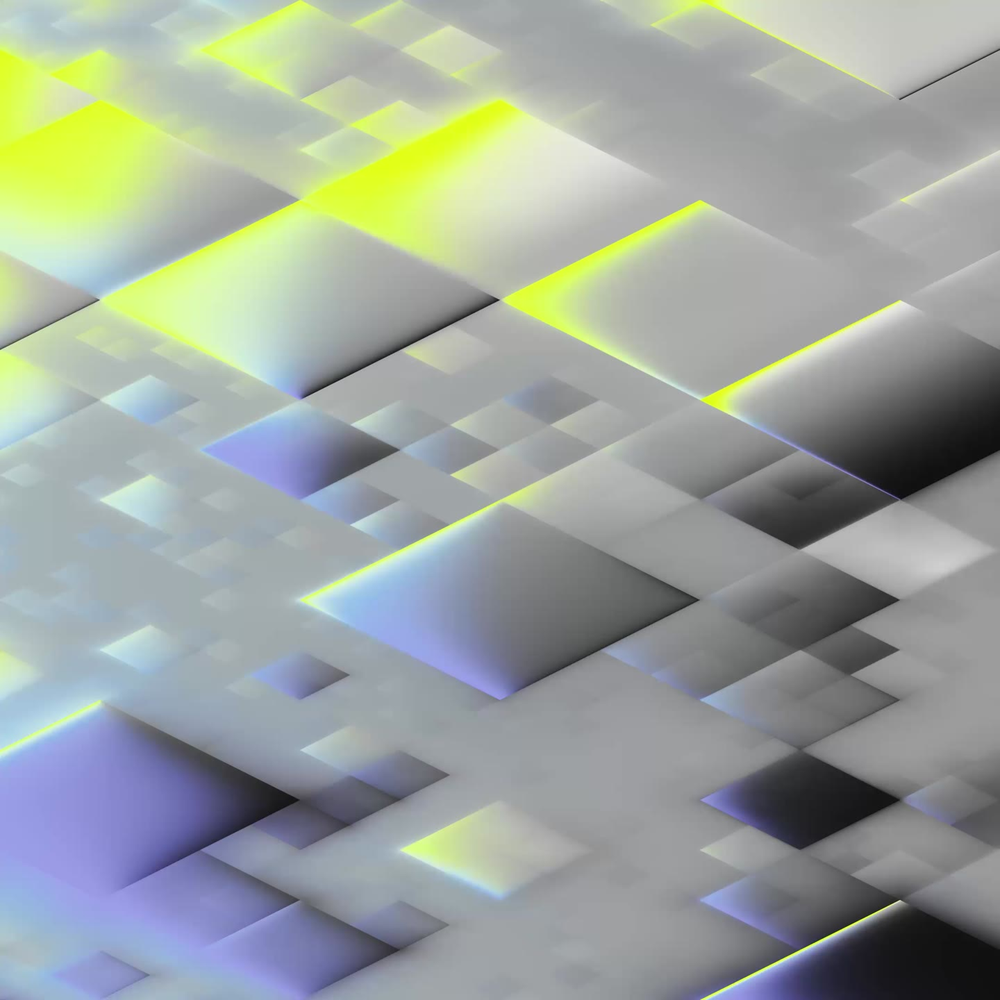

Find the answers.
Make the decisions.
Build the future.
Data and AI solutions that turn complex data into measurable results.
From sensor to stream
- S0143.2 °C48.1 °C53.1 °C45.1 °C50.0 °C54.9 °C
- S023.5 mm/s4.0 mm/s4.5 mm/s3.7 mm/s4.2 mm/s3.4 mm/s
- S0329.7 A32.4 A28.0 A30.7 A33.4 A29.0 A
- S042 870 rpm3 011 rpm2 781 rpm2 923 rpm3 065 rpm2 835 rpm
- S0538 m³/h43 m³/h34 m³/h39 m³/h31 m³/h36 m³/h
- S0617.2 bar14.8 bar16.2 bar17.7 bar15.3 bar16.8 bar
- S0793 %87 %91 %95 %89 %92 %
- S0818.1 kPa14.4 kPa16.7 kPa13.0 kPa15.2 kPa17.5 kPa
- S09321 K326 K331 K323 K328 K333 K
- S10649 V670 V691 V657 V678 V644 V
- S11166 kW188 kW152 kW174 kW196 kW160 kW
- S1250.4 Hz50.8 Hz50.2 Hz50.5 Hz49.9 Hz50.3 Hz
- S13107.0 °C112.0 °C104.0 °C108.9 °C100.9 °C105.8 °C
- S143.7 mm/s2.9 mm/s3.4 mm/s3.9 mm/s3.1 mm/s3.6 mm/s
- S1531.0 A26.6 A29.3 A24.9 A27.6 A30.3 A
- S162 565 rpm2 707 rpm2 849 rpm2 619 rpm2 761 rpm2 902 rpm
- S1727 m³/h32 m³/h37 m³/h29 m³/h34 m³/h25 m³/h
- S1814.0 bar15.5 bar13.1 bar14.5 bar16.0 bar13.6 bar
- S1986 %89 %83 %87 %91 %85 %
- S2013.2 kPa15.5 kPa11.8 kPa14.0 kPa10.3 kPa12.6 kPa
- S21324 K316 K321 K326 K318 K323 K
Thousands of sensors, one stream.
Controllers, meters and sensors deliver eight thousand four hundred values a second. We bring them together, name them and turn the stream into a basis you can compute on.
Read from top to bottom.
At the top each measurement enters on its own — pressure, speed, temperature. Every junction merges what arrives at it, until a single number stands at the bottom. No value is lost, none is created: that is exactly what makes the stream billable.
Thousands of sensors produce data, but no answers from it.
We make more of your data and build the infrastructure that turns data streams into business models.
Service Offering
4 stepsDiscovery
Getting started
You want to make more of your plant data – and do not know where to start? That is normal. Before we promise anything, we show you in 2–4 weeks where your data has the greatest leverage: one or two prioritised use cases, a solid business case and a clear roadmap. On site, together with your people.
Your benefit
You invest safely and cost-effectively in a plan that turns your data step by step into real competitive advantage – without committing in advance.
Data foundation
The basis
Before models can compute, data has to arrive, be understood and be reliable. We build the platform everything else stands on – connection, processing, quality assurance, access.
Your benefit
An infrastructure that also holds up for the second and third use case, instead of being rebuilt for every one of them.
Fewer outages
Predictive Maintenance
We spot anomalies before they become a standstill – on the basis of the data your plants already produce anyway.
Your benefit
Fewer unplanned stoppages, maintenance windows you can plan, and spare-part logistics that follow reality instead of the calendar.
AI & machine learning are never an end in themselves here. They are the tool with which we cut outages and raise performance – not the product. We solve real problems instead of producing buzzwords.
More performance
Asset Performance
Once the plants are running it is about the last percent: throughput, consumption, quality. We make visible where performance is left on the table – and adjust.
Your benefit
Measurably better figures in running operation, traceable down to the individual plant.
Our solutions do not get stuck in the proof of concept, they create value in running operation.